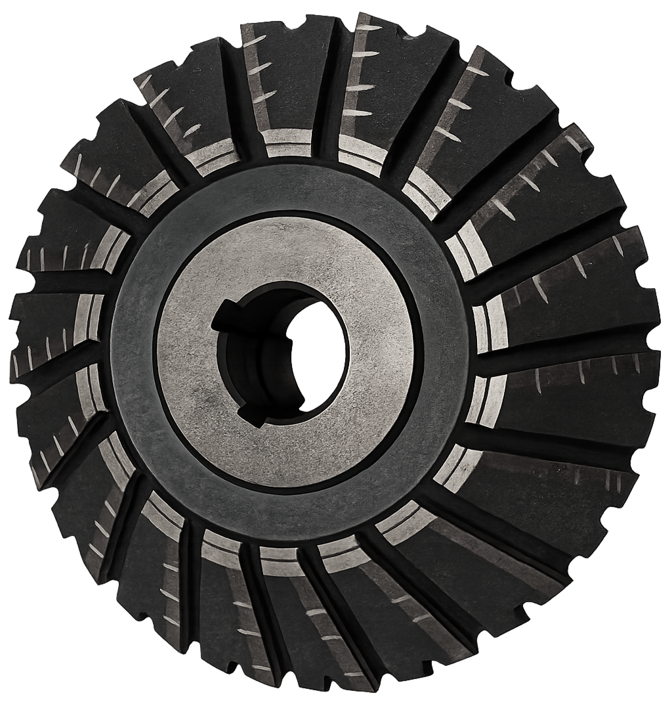
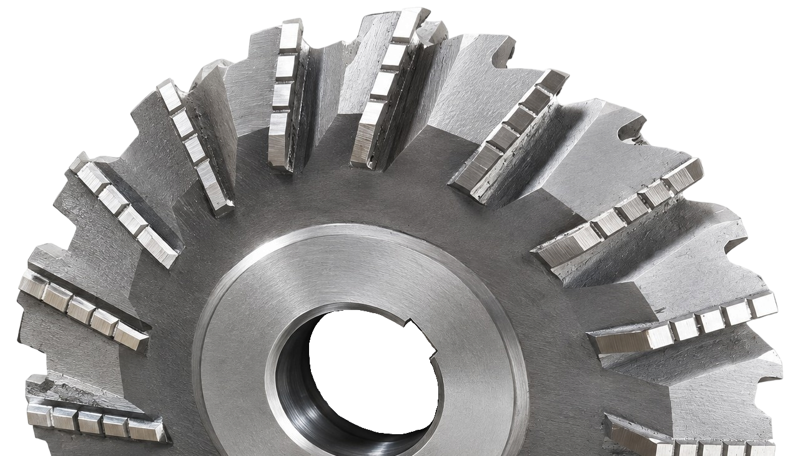

Angle Milling Cutters for FEIN & Comparable Machines
Cutters
Profile / angle milling cutters manufactured to fit FEIN pipe cold cutting & beveling machines.
We are not tied to a single brand. The same cutters are made for any machine of this class — chain-driven and split-frame (clamshell) cold cutting and beveling machines, whoever built them. Send us the machine model or a drawing, and we manufacture the cutter to match: outside diameter and width, bore with keyway or bolt pattern, tooth profile and bevel angle.
They handle edge preparation and machine a clean, weld-ready bevel across a wide range of pipe diameters and wall thicknesses.
Contact us
